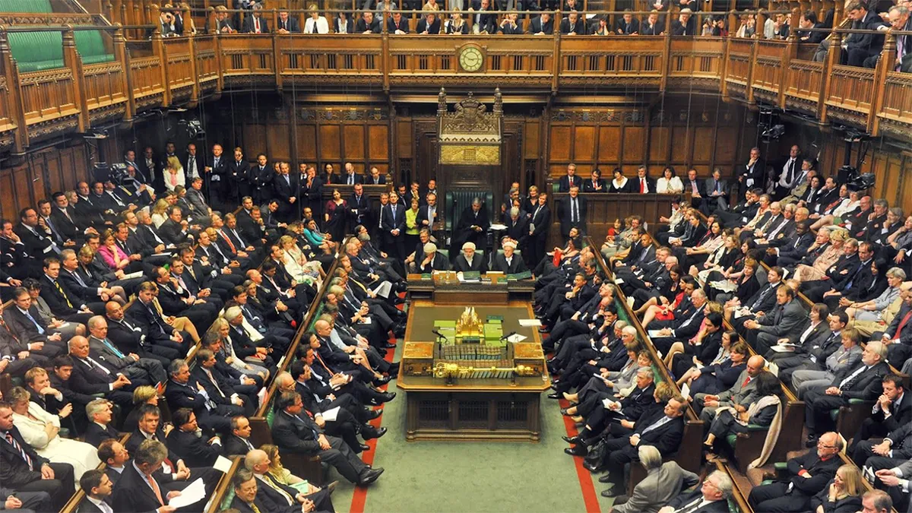

The political and military collapse of the United Kingdom improves Argentina's chances in its Falkland Islands sovereignty claim
The crisis of British two-party politics, defense cuts, Trump's pressure over the Iran war, and the supply shortages already hitting the islands create an unprecedented scenario for Argentine diplomacy. From Patagonia, the opportunity to recover the archipelago has never been closer.

The geopolitical chessboard and the British crisis
Trump pressures the United Kingdom and threatens to review its support for British sovereignty over the Falklands
U.S. President Donald Trump has turned the Falkland Islands (Islas Malvinas) into a piece of geopolitical leverage in the context of the conflict with Iran. According to leaked Pentagon documents obtained by Reuters — the world's largest international news agency, headquartered in London — in late April, the U.S. administration was evaluating a review of its traditional diplomatic backing of Britain's sovereignty claim over the archipelago as a way to "punish" London for its refusal to support the war against Iran.
The conflict began on February 28, 2026, when the United States and Israel launched a military offensive against the Islamic Republic. British Prime Minister Keir Starmer refused to give Trump "a blank check" to use British bases in the offensive, though he later permitted limited defensive missions in the Strait of Hormuz. Trump reacted harshly to the refusal.
The internal memorandum lists a series of punitive measures against NATO allies that did not provide "full support" to the war, including reviewing support for European "imperial possessions" — including the Falkland Islands — and suspending Spain from NATO for denying access to its bases and airspace.
Military analysts warned that the United Kingdom would face serious difficulties defending the Falklands if Washington withdrew its diplomatic and logistical backing. President Javier Milei declared that the Malvinas "were, are, and will always be Argentine" and assured that his government is "doing everything humanly possible" to recover them. The leader of the island government, Andrea Clausen, denounced Trump for using the Falklands as a "political pawn" to punish the United Kingdom. For Argentina, this dispute between historic allies represents an unprecedented diplomatic window.
War in the Middle East: the direct impact on islanders' pockets
Beyond the diplomatic tensions, the war in the Middle East is already generating concrete effects on daily life in the archipelago. Although the conflict unfolds more than 12,000 kilometres from the South Atlantic, island authorities acknowledged that the tensions around the Strait of Hormuz forced them to activate contingency plans to guarantee fuel, maritime transport, medicines, and essential products.
The public acknowledgement by members of the local Legislative Assembly reveals the extreme logistical dependence of the Falklands on global supply chains. In the words of legislator Michael Goss, the islands are "at the end of the global distribution chain," meaning that any crisis linked to maritime transport or the energy market can quickly affect the archipelago. This structural vulnerability is a weak point that Argentina can leverage in its diplomatic strategy.
The authorities acknowledged maintaining fuel reserves equivalent to three months of consumption, but warned that a prolonged deterioration would force them to prioritise essential services. In parallel, work is underway to diversify food and medicine suppliers, reinforcing logistical connections with Chile through LATAM flights.
This new scenario adds to pre-existing inflationary pressures. According to the Retail Price Index published for Stanley's Standing Finance Committee, annual inflation in 2025 reached 2.1%, driven mainly by food prices. For a territory that imports almost everything it consumes, any increase in maritime freight directly impacts islanders' cost of living.

The end of British stability: the political "tsunami" that benefits the Argentine claim
The two-party system that functioned in the United Kingdom since 1721 has completely fractured. The local elections of May 2026 were a political earthquake that exposed a new reality.

End of two-party rule: the elections marked the end of the traditional dominance of the Labour Party and the Conservative Party, giving way to a five-party system: Labour, Conservatives, Reform UK (far-right), Greens, and nationalist parties (SNP, Plaid Cymru). For Argentine diplomacy, a fragmented Parliament means there is no longer a monolithic foreign policy on the Falklands.
Crisis of the Labour government: Prime Minister Keir Starmer is going through his worst moment, with his government "sinking in the polls" and a sharp loss of support across all regions. A weak government at home has less capacity to maintain firm positions abroad.
Rise of the far right: Nigel Farage, leader of Reform UK, leads the polls with voting intentions exceeding 30%, becoming a key political force and further destabilising governability. Farage has shown in the past a lesser interest in overseas territories, which could translate into lower priority for the Falklands.
Legislative fragmentation: with no party holding a clear majority, lengthy periods of uncertainty, fragile coalitions, and internal conflicts are expected, leaving the United Kingdom on the verge of a "political civil war" without a clear direction. In this context, any negotiation over the future of the colonies becomes harder for London to sustain.
The end of the military umbrella: defense cuts
Against a backdrop of economic crisis, Keir Starmer's Labour government has announced drastic budget cuts to international aid in order to cover an enormous deficit at the Ministry of Defence, estimated at £28 billion. The consequences for the defence of the Falklands are clear.

Strategic withdrawal: the United Kingdom is reducing its military deployments outside Europe. This means fewer ships, fewer aircraft, and fewer soldiers available to patrol the South Atlantic.
Exercises at risk: from 2026 onwards, training exercises in the South Atlantic have been cancelled or reduced. According to military sources, the British Army no longer has the resources to maintain a significant naval and air presence in the archipelago. For Argentina, this loss of military capacity represents a historic opportunity to advance its claim without the risk of a robust armed response.
The precedent of sovereignty cession: the Chagos case
The most alarming precedent for the Falkland islanders is London's decision to cede sovereignty over the Chagos archipelago to Mauritius, while retaining the military base at Diego Garcia. This decision has generated profound distrust.
Island leaders have expressed their "deep concern," warning that this agreement sets a "worrying precedent" for the future of British overseas territories. For Argentina, this precedent strengthens its position both legally and politically: if the United Kingdom ceded sovereignty in one case, it could do so again in the Falklands.
A veteran of the 1982 conflict, Simon Weston, issued a warning following the Chagos agreement, noting that "we no longer know" whether the British government will defend the islands' sovereignty. That feeling of abandonment is the perfect breeding ground for islanders to begin evaluating alternatives.
Aid or financial abandonment? The fiscal crisis also impacts economic aid. Despite official promises to maintain commitment to the territories, the reality is that financial assistance is under scrutiny and cuts to international cooperation are affecting funds destined for the colonies. An archipelago financially dependent on London becomes more fragile and more likely to accept negotiated agreements.
A geopolitical chessboard favourable to Argentina

A new political landscape: the United Kingdom's internal crisis, its military weakness in the South Atlantic, and the collapse of its traditional political consensus on defending the colonies create an unprecedented diplomatic window of opportunity for Argentina.
The Trump factor: the U.S. President's pressure on London — using the Falklands as a bargaining chip for support in the war against Iran — further weakens the British position and strengthens the Argentine claim in international forums. Milei, Trump's ally, can capitalise on that personal relationship.
Focus on the UN and the OAS: the Argentine government is already evaluating next steps in light of the new context, in order to intensify its claim over the Falkland Islands. British fragmentation allows the claim to be presented with greater force and with less likelihood that London can mount a united front.
The islanders' vulnerability exposed: the war in the Middle East demonstrated that the Falklands are highly dependent on global supply chains. Argentina can use this fact to promote a negotiated solution that guarantees supply through the continental territory.
Conclusion: the historic opportunity for Patagonia and Argentina
The political, economic, and military "tsunami" shaking the United Kingdom is weakening the pillars that sustained its colonial presence. For the Falkland Islands, the future is uncertain: they watch as their principal military guarantor retreats, their political support fragments, and London negotiates and cedes sovereignty in other conflicts.
To this is added the pressure from the United States, which uses the archipelago as a "pawn" in its conflict with Iran, and the concrete effects of that same war on the supply of fuel, food, and medicines to the islands.
The Argentine claim, which for years encountered a concrete wall in British stability and unconditional U.S. support, now navigates far more favourable waters. The task of national diplomacy is to seize each of these cracks and turn the opportunity into reality.